망원경 연동과 원격 촬영
장시간 녹화 환경을 마련한 뒤, 멀리 있는 발사체를 촬영하기 위한 망원경과 카메라 연결을 준비했습니다. 1,500만원의 예산 한도 안에서 촬영 조건에 맞는 두 구성을 검토하고, 견적과 결제 서류 처리부터 수령·조립까지 직접 진행했습니다. 카메라 연결용 어댑터를 설계·출력해 장착하고, PC에서 영상을 보며 키보드로 망원경 방향을 조작하는 환경을 구성한 과정을 정리합니다.
1. 촬영 조건
촬영 목적을 장비 조건으로 정리
앞선 녹화 실험에서는 들어오는 데이터를 오래 저장할 수 있는지 확인했다. 다음 과제는 먼 거리의 대상을 카메라 화면에 충분한 크기로 담고, 움직이는 방향에 맞춰 망원경을 조작하는 것이었다. 이를 위해 한 대로 모든 조건을 맞추기보다 이동성과 고배율 촬영을 나누어 두 구성을 선택했다.
발사체 촬영은 수 km 이상 떨어진 대상을 관찰해야 하므로, 거리와 대상의 크기를 먼저 생각했다. 같은 발사체라도 멀어질수록 화면에서 차지하는 크기는 작아지고, 상승하면서 관측 거리와 방향도 계속 바뀐다. 실제 연결 시험은 약 2km 거리의 지상 대상을 기준으로 진행했다. 이 시험으로 초점과 영상 수신, 방향 조작을 먼저 확인하고, 더 먼 발사체 촬영에 필요한 시야와 구동 조건을 준비하는 순서로 접근했다.
처음 다루는 장비였기 때문에 바로 제품을 고르기보다 필요한 작업부터 정리했다. 먼 대상을 화면에 넣을 수 있어야 하고, 카메라를 연결한 상태에서도 방향을 바꿀 수 있어야 했다. 현장으로 옮겨 설치할 수 있는지, PC에서 조작할 수 있는지, 맞는 연결 부품이 있는지도 확인할 항목으로 잡았다. 이후 제품 자료를 찾아보며 답을 얻을 수 있는 항목과 직접 문의하거나 장착해 봐야 하는 항목을 나누었다.
구동 속도와 지지 안정성
발사체를 따라가려면 화면에서 대상이 움직이는 각속도에 맞춰 마운트를 돌릴 수 있어야 한다. 따라서 모터의 최대 이동 속도와 함께 낮은 속도에서 얼마나 세밀하게 방향을 바꿀 수 있는지도 검토했다. CGE Pro 마운트 자료에서는 최대 5.5°/s의 구동 속도를 확인했고, 큰 방향 전환과 화면 중심 맞추기에 서로 다른 속도를 사용하는 운용을 생각했다. 실제로 얼마나 부드럽게 움직이는지, 카메라를 장착했을 때 흔들림은 어떤지도 문의하며 선택 조건을 구체화했다.
가벼운 구성은 Celestron NexStar 4SE로, 상대적으로 낮은 배율로 대상을 찾고 촬영 방향을 잡는 용도이다. 이동과 설치가 수월한 조합으로, 약 100만원 규모로 준비했다. 다른 하나는 Celestron C11 경통과 CGE Pro 적도의 마운트의 조합이며, 약 1,100만원 규모이다. 무게가 있더라도 고배율 촬영을 지탱할 수 있는 구성을 선택했다. 여기서는 광학계뿐 아니라 카메라를 장착한 상태의 지지 안정성과 모터 조작 가능 여부를 함께 검토했다.
고배율에서는 작은 방향 변화도 화면에서 크게 나타난다. 특히 이벤트 카메라는 밝기 변화에 반응하므로, 장비가 흔들리면 관찰 대상의 움직임뿐 아니라 배경의 변화도 함께 기록될 수 있다. 따라서 단순히 확대하는 것보다 불필요한 흔들림의 영향을 줄이는 구성을 우선했다.
중량은 지지 안정성과 현장 설치 부담을 함께 결정했다. 경량 구성은 본체 약 5kg과 삼각대 약 4.5kg 수준인 반면, 대형 구성은 마운트·삼각대·무게추만 약 70kg이고 경통은 별도로 약 12.4kg이었다. 대형 마운트의 지지하중은 약 41kg으로 제시되어 있어 경통뿐 아니라 카메라와 연결 부품의 무게도 함께 고려했다. 충분한 지지 여유를 확보하는 동시에 운반, 조립, 균형 조정에 필요한 작업량도 예상해야 했다. 결국 거리와 시야, 회전 속도, 하중과 이동성을 묶어서 두 장비의 역할을 정했다.
선택한 제품과 배율
| 항목 | Celestron NexStar 4SE | Celestron C11 + CGE Pro |
|---|---|---|
| 광학 방식 | 막스토프 카세그레인 | 슈미트 카세그레인 |
| 구경 | 102mm · 4인치 | 279.4mm · 11인치 |
| 기본 접안렌즈 / 관측 배율 | 25mm / 53배 | 40mm / 70배 |
| 자료상 유효 배율 범위 | 15–241배 | 40–660배 |
| 마운트 | 싱글 포크 경위대 · 상하/좌우 구동 | CGE Pro 적도의 · RA/DEC축 구동 |
| 중량 | 본체 4.99kg + 삼각대 4.54kg | 경통 12.4kg + 마운트·삼각대·무게추 구성 약 70kg |
| 준비한 규모 | 약 100만원 | 약 1,100만원 |
표의 배율은 접안렌즈를 사용하는 관측 기준이다. 카메라를 직접 연결한 뒤에는 실제 화면에서 대상을 찾고 방향을 조작할 수 있는지를 확인했다.
마운트 구조부터 익히기
4SE의 경위대는 상하와 좌우로 방향을 움직이는 구조라 화면을 보며 방향 조작을 익히기에 직관적이었다. CGE Pro는 적경(RA)과 적위(DEC) 두 축을 사용하는 적도의이다. 천체 추적에서는 지구 자전에 맞춘 축 정렬이 중요하지만, 이번 준비에서는 카메라가 바라보는 방향과 각 축의 움직임을 연결해 이해하는 데 초점을 두었다. 큰 C11 경통을 안정적으로 지지하면서 원하는 방향으로 움직일 수 있는지까지 광학계와 마운트를 한 조합으로 검토했다.
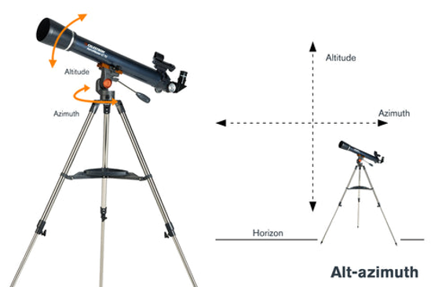
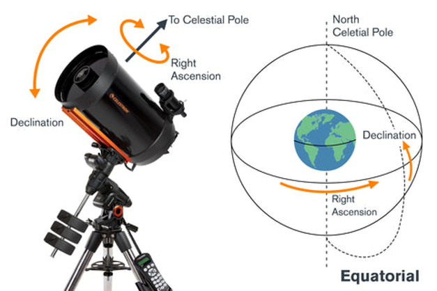
2. 구매 진행
문의할 내용을 먼저 정리
대표님이 제시한 1,500만원 한도를 기준으로 구체적인 장비 구성과 구매 절차를 맡았다. 후보별로 촬영 목적에 맞는지 비교하고, 직접 연락해 재고와 납기, 포함 부속품, 배송과 결제 조건을 확인했다. 망원경 본체 가격만 보는 대신 실제로 조립하고 운용할 때 필요한 구성까지 확인한 뒤 견적을 요청했다.
연락하면서 중요했던 것은 가격 한 가지만 묻지 않고, 구매 후 실제 사용까지 이어지는 조건을 함께 확인하는 것이었다. 장비가 있어도 촬영 일정에 맞춰 도착하지 않거나 조작을 익힐 방법이 없다면 준비 계획을 바꿔야 했다. 다음 항목을 질문 목록으로 정리하고, 전화와 이메일에서 받은 답변을 구매 판단에 반영했다.
- 성능과 구성: 모터의 움직임과 미세 조작, 카메라 장착 가능 여부, 기본 포함품과 추가로 필요한 부품.
- 재고와 배송: 국내 재고 보유 여부, 출고 가능한 날짜, 예상 도착 일정, 배송비와 화물 운송 조건.
- 실물 확인: 전시 제품이 있는지, 직접 방문해 볼 수 있는지, 카메라를 연결하거나 시연해 볼 수 있는지.
- 사용 지원: 조작 방법 안내나 교육이 가능한지, 구매 후 사용 문의와 사후 서비스는 어떤 범위에서 받을 수 있는지.
- 결제와 증빙: 계좌이체·카드 결제 가능 여부, 할인 조건, 견적서·세금계산서·영수증 등 필요한 증빙의 발행 여부.
구매 전에는 카메라를 가져가 미리 결합해 볼 수 있는지, 조작 방법을 배울 수 있는지도 문의했다. 사전 실물 시험과 별도 교육은 어려워, 매뉴얼과 구성 자료를 먼저 비교하고 수령 후 직접 조립·연결을 확인하는 방식으로 진행했다. 국내 재고와 배송 일정을 확인한 것도 촬영 준비 기간 안에 장비를 받고, 어댑터 제작과 조작 연습 시간을 확보하기 위해서였다.
구매 의도와 요청사항을 명확하게 전달
이메일에는 제품명과 수량을 적고, 두 구성을 각각 별도 견적서로 요청했다. 이때 두 견적이 구매 후보 중 하나를 고르기 위한 것으로 읽힐 수 있어, 두 구성 모두 구매하되 내부 회계처리만 나누려는 것이라고 추가로 설명했다. 내가 알고 있는 사정이 상대방에게도 당연히 전달되는 것은 아니었다. 구매 의도와 서류를 나누는 이유를 함께 적어야 요청이 분명해졌다.
배송은 함께 받고 서류는 구매 건별로 나누는 조건도 따로 정리했다. 배송비를 어느 구매 건에 포함할지 적고, 제품 구성과 최종 금액을 견적서에서 다시 확인했다. 담당자는 가능한 발행 방식과 출고 조건을 회신했고, 나는 그 답변을 기준으로 필요한 서류와 다음 절차를 다시 정리했다. 서로 확인한 내용을 이메일에 남겨 두니 수정 견적을 받았을 때도 무엇이 달라졌는지 대조할 수 있었다.
회신에 맞춰 절차 조정
처음에는 세금계산서 발행과 배송을 먼저 요청했지만, 물품 대금 입금 후 출고할 수 있다는 안내를 받았다. 이후에는 선입금에 필요한 서류부터 확보하는 순서로 바꿨다. 견적서, 사업자등록증, 통장사본, 거래명세서, 세금계산서를 목록으로 요청하고, 견적서와 거래명세서는 구매 건별로 각각 필요하다고 명시했다. 수정된 견적서와 세금계산서를 확인한 뒤 회사 결제 절차와 배송 일정을 이어서 맞췄다.
이 과정에서 업무 이메일을 쓰는 방법도 익혔다. 제목에는 견적·배송·서류 요청처럼 연락 목적을 드러내고, 본문에는 제품 구성과 요청사항을 구분해 적었다. 전화로 들은 조건은 다음 메일에 다시 정리하고, 상대가 답하기 위해 필요한 정보도 함께 전달했다. 특히 두 건 모두 구매한다는 점, 서류는 나누되 배송은 함께 받는다는 점처럼 오해하기 쉬운 조건을 명확히 적은 것이 도움이 됐다. 답변을 받으면 그 조건에 맞춰 다음 요청을 구체화하면서, 문의부터 실제 수령까지 직접 진행하는 방법을 배웠다.
3. 수령과 조립
두 망원경을 수령한 뒤 구성품을 확인하고 조립·설치를 진행했다. 삼각대와 구동부, 경통의 결합 구조를 매뉴얼과 대조하며 익혔고, 전원을 연결해 기본 조작과 장비 상태를 확인했다. 장비를 구매하는 데서 끝나는 것이 아니라 실제 촬영에 사용할 수 있도록 조립 순서와 조작 방법까지 직접 익히는 과정이었다.
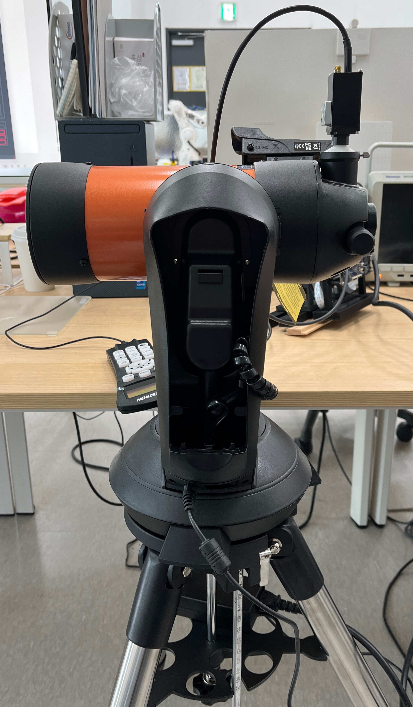
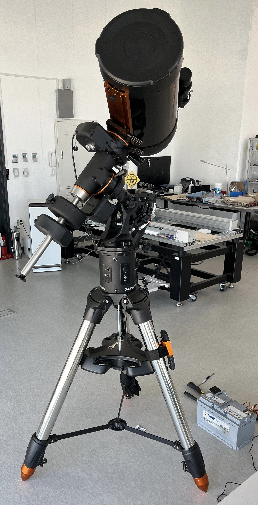
매뉴얼을 읽으며 마운트가 움직이는 축과 구동 속도 설정도 살펴봤다. 대상을 처음 찾을 때와 화면 중심에 맞출 때는 필요한 이동량이 다르므로, 큰 방향 전환과 미세 조작을 구분할 필요가 있었다. 천체 위치를 기준으로 하는 정렬 기능과, 화면을 보며 직접 방향을 움직이는 조작의 목적도 나누어 이해했다. 이번에는 원거리 지상 대상을 보면서 카메라 연결과 방향 제어를 먼저 확인했다.
4. 카메라 어댑터 제작
두 연결부를 맞추는 설계
망원경을 눈으로 보는 것과 카메라로 촬영하는 것은 연결 방식부터 달랐다. 카메라 렌즈를 분리하고 망원경의 광학계를 이용하려면, 카메라를 접안부에 고정하면서 빛이 센서로 들어오도록 연결해야 했다. 이를 위해 망원경 쪽 결합부와 카메라 마운트에 맞는 어댑터를 직접 3D 모델링하고 프린터로 출력했다.
설계는 망원경 쪽 연결 규격과 카메라 쪽 나사 규격을 나누어 정리하는 데서 시작했다. 망원경 쪽은 1.25인치 접안부에 끼우는 방식과 NexStar 4SE 후면의 1-3/8-24 TPI 나사에 체결하는 방식으로 구분했다. 카메라 쪽은 M12×0.5와 C-mount를 각각 연결할 수 있도록 구성해 총 네 종류의 모델을 만들었다. TPI는 인치당 나사산 수를 뜻하므로, 단순히 지름만 비슷하게 만드는 것이 아니라 나사 간격과 암수 방향까지 맞춰야 했다.
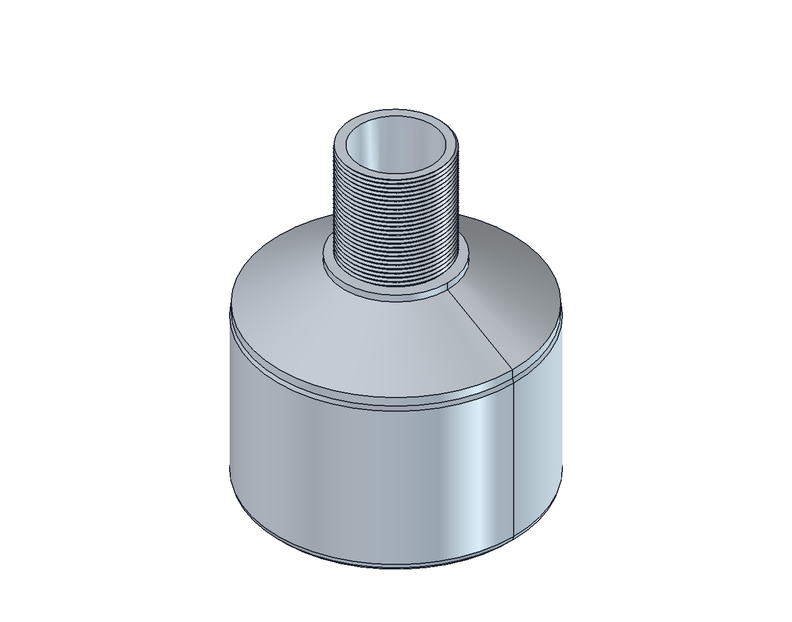
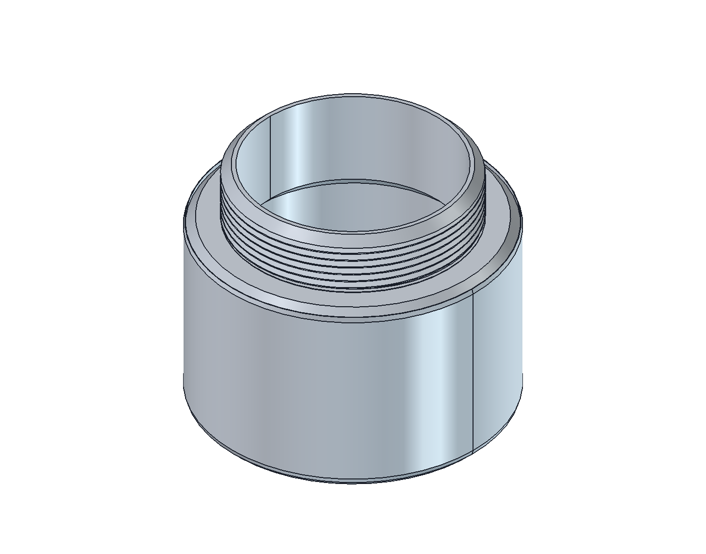
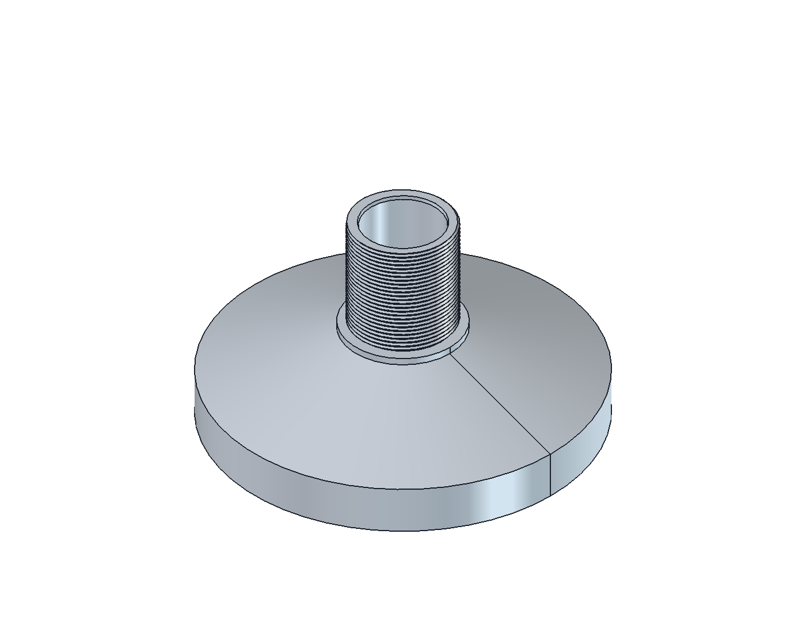
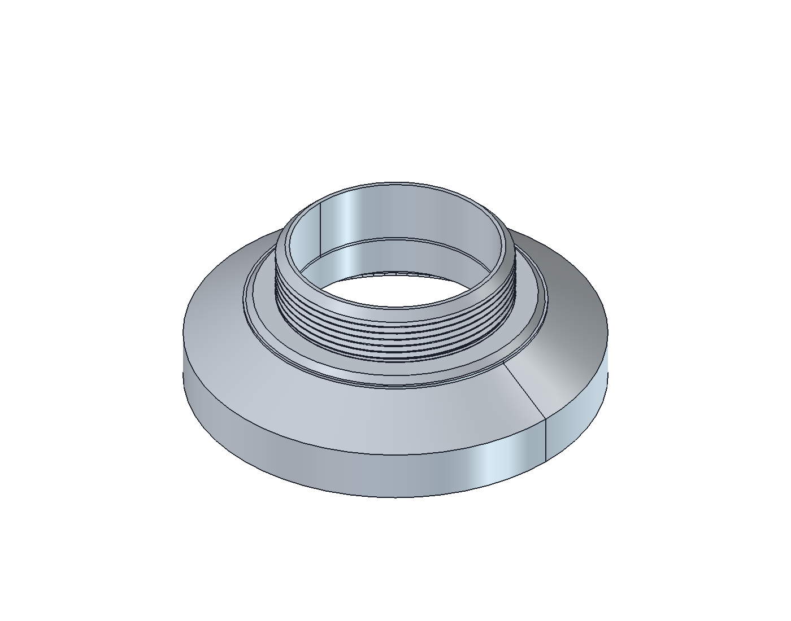
접안부에 끼우는 부분은 원통 형상으로 만들고, 카메라 쪽에는 해당 마운트의 나사를 배치했다. 가운데에는 빛이 통과하는 공간을 두었다. 외형을 연결하는 것뿐 아니라 센서 앞의 통로와 카메라 주변 간섭도 함께 생각해야 했다. 또한 기계적으로 체결되는지와 실제로 초점을 맞출 수 있는지는 별개이므로, 출력물을 장착한 다음 영상으로 확인하는 단계까지 필요했다.
출력과 실제 장착
FreeCAD 원본은 치수와 형상을 다시 수정할 수 있도록 보관하고, 3D 프린팅용 STL을 따로 내보냈다. 네 부품을 한 번에 배치한 출력용 파일도 함께 정리했다. 출력에는 PLA와 0.05mm 레이어 높이를 사용했다. 나사와 끼워 맞추는 부분은 화면의 모델만으로 확인하기 어려우므로, 실제 출력물로 체결 상태를 확인하는 과정이 중요했다.
먼저 1.25인치 접안부에 카메라를 연결하는 어댑터를 제작해 실제로 장착했다. 출력물과 카메라를 조립해 결합과 고정 상태를 확인하고, PC에 영상이 들어오는 것까지 이어서 점검했다. 이후 연결 방식에 따라 사용할 수 있도록 M12와 C-mount용 모델을 정리해 망원경 카메라 마운트 어댑터 저장소에 설계 파일과 출력 파일을 공개했다.
사진의 흰색 출력물은 형상과 장착 상태를 확인한 부품이다. 광학 경로 주변의 재질은 내부 반사에도 영향을 줄 수 있어, 저장소에는 검은색 필라멘트 사용을 권장하는 이유도 정리했다. 출력 색상만으로 반사가 모두 없어지는 것은 아니므로 내부 표면과 빛이 들어오는 통로를 함께 고려해야 한다는 점도 알게 됐다.
FreeCAD 설계 원본과 STL 출력 파일은 저장소에서 확인할 수 있다. 렌더링과 실제 장착 사진을 함께 올려 모델이 어떤 연결부에 쓰이는지 비교할 수 있도록 했다.
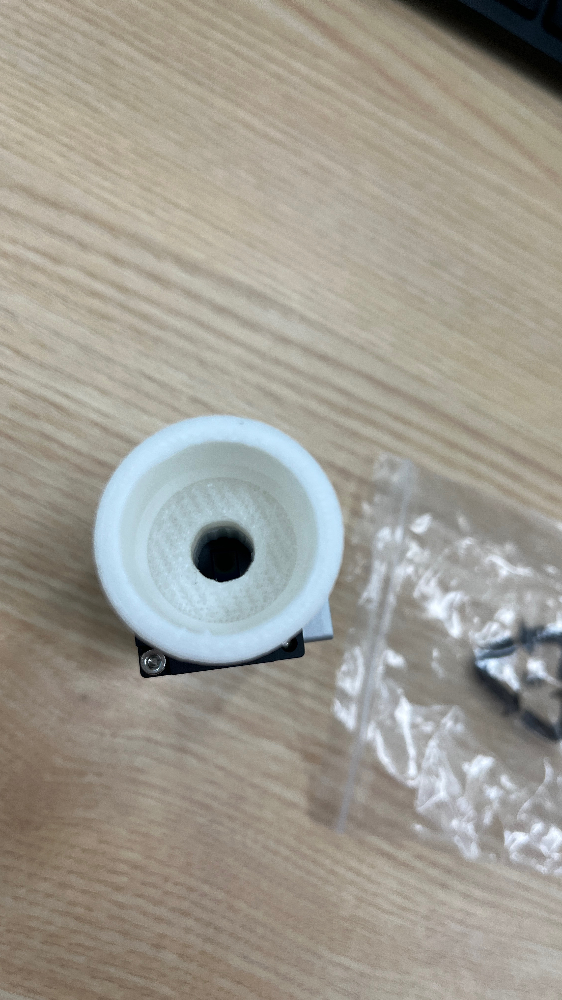
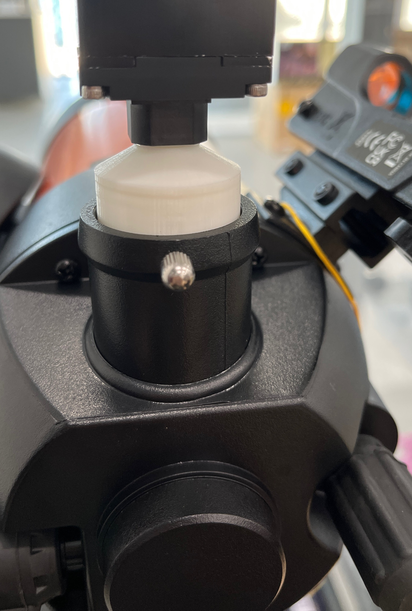
5. PC 원격 조작
장비별 역할을 나누어 연결
카메라 장착 후에는 NexStar 4SE부터 컴퓨터에 연결했다. 회사에 있던 외부 전원 장치를 활용하고, 핸드 컨트롤러와 PC를 USB로 연결해 키보드로 망원경 방향을 움직일 수 있게 했다. 카메라 영상도 PC에서 실시간으로 확인해, 망원경을 직접 들여다보지 않고 화면을 보면서 조작할 수 있도록 구성했다.
이때 카메라와 마운트는 역할이 다르다. 카메라는 관측한 영상을 PC로 보내고, 마운트는 PC에서 내린 방향 명령에 따라 망원경을 움직인다. 두 연결을 함께 사용하면 화면에서 대상의 위치를 확인하고 키보드로 방향을 보정할 수 있다. 약 2km 떨어진 대상을 보며 영상 확인과 방향 조작을 시험했으며, 글 처음의 데모 영상에 그 동작을 담았다.
원격 조작에서 중요한 것은 명령이 전달되는지뿐 아니라 그 결과를 화면에서 바로 판단할 수 있는지였다. 먼저 대상을 화면 안에 넣고 초점을 맞춘 다음, 방향을 움직였을 때 영상 속 대상이 어떻게 이동하는지 확인했다. 고배율 화면에서는 짧은 조작으로도 대상이 크게 이동할 수 있어, 화면을 보며 움직이는 양을 익히는 과정이 필요했다. 이 연결 시험을 통해 망원경의 기구 조작과 카메라의 영상 확인을 PC에서 함께 수행하는 기본 운용을 마련했다.
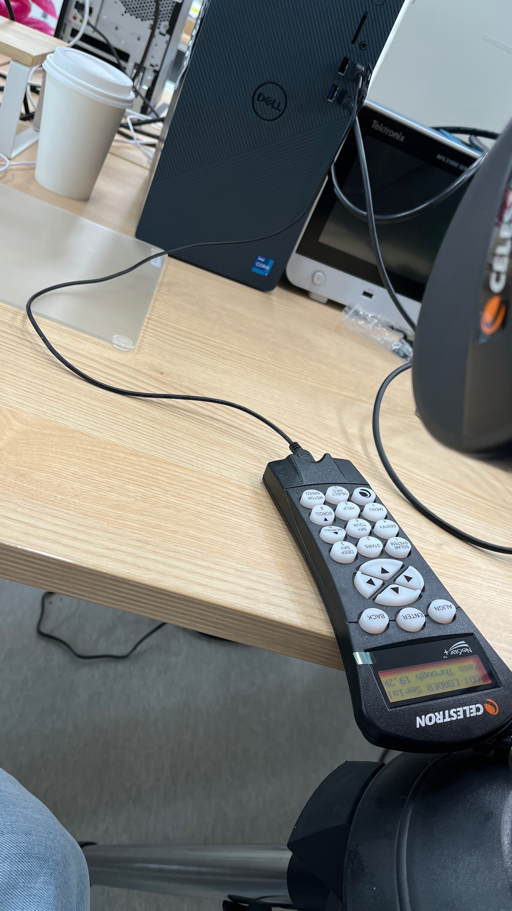
키보드 입력과 실제 움직임 확인
처음부터 발사체를 따라가는 상황을 만들기보다는, 고정된 원거리 대상을 두고 연결과 조작을 익혔다. 먼저 마운트가 PC 명령에 반응하는지 확인하고, 카메라 화면을 함께 띄운 뒤 방향을 바꿔 보았다. 손으로 키보드를 누르는 장면과 그때 PC에 들어오는 영상을 따로 기록해, 조작과 관측 결과를 비교할 수 있도록 했다.
관측 화면으로 연결 결과 확인
PC에서는 방향과 이동 속도를 정하는 제어 창과 DVS Viewer를 함께 열어 두었다. 제어 창은 망원경에 움직임을 전달하고, Viewer는 카메라가 받아온 장면을 보여준다. 방향 명령을 바꿨을 때 건물의 윤곽이 화면에서 이동하는 것을 보며 두 연결이 함께 동작하는지 확인했다. 이벤트 영상에서는 장면의 변화가 나타나므로, 망원경이 움직일 때 고정된 건물의 윤곽도 영상에 드러난다.
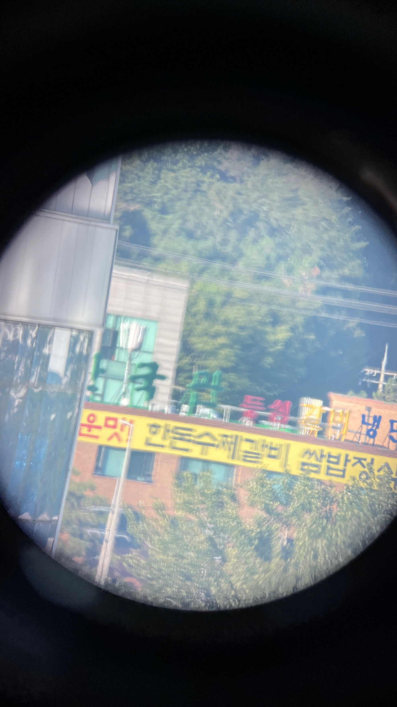
이렇게 전원과 장비 연결, 방향 명령, 영상 확인을 나누어 익히니 처음 보는 장비도 확인할 순서를 잡을 수 있었다. 원격 조작은 케이블을 연결하는 것으로 끝나지 않았다. 화면에서 대상을 찾고, 움직이는 방향을 이해하고, 필요한 만큼만 조작하는 연습까지 이어져야 현장에서 사용할 수 있는 상태가 됐다.
6. 현장 촬영으로 연결
두 망원경을 각각 컴퓨터에 연결해 발사체를 관찰할 수 있도록 준비했다. 가벼운 구성으로 촬영 방향을 잡고, 고배율 구성으로 더 작은 영역을 자세히 관측하는 방식으로 운용을 계획했다. 앞서 마련한 장시간 녹화 환경과 연결해 DVS 이벤트와 CIS 영상을 기록하는 것이 목표였다. 이 준비 이후 대표님, 선임연구원과 함께 낭도에서 누리호 5차 발사를 촬영했다. 전날 답사부터 실제 설치·촬영과 비교 영상 제작까지의 과정은 발사체 DVS·CIS 촬영 기록에 이어서 정리했다.
이번 작업에서는 촬영 목적을 장비 선택 조건으로 바꾸고, 그 조건을 견적과 실제 구성품까지 이어서 확인하는 과정을 익혔다. 구매 서류와 일정은 직접 연락하며 조율했고, 장비를 받은 뒤에는 매뉴얼을 읽어 조립과 조작 방법을 익혔다. 맞는 연결 부품은 직접 설계·출력하고 실제 장착과 영상 확인까지 진행했다. 이렇게 광학계, 기구 연결, PC 제어와 저장 환경을 하나씩 맞춰 가며 현장 촬영에 필요한 구성을 준비했다.